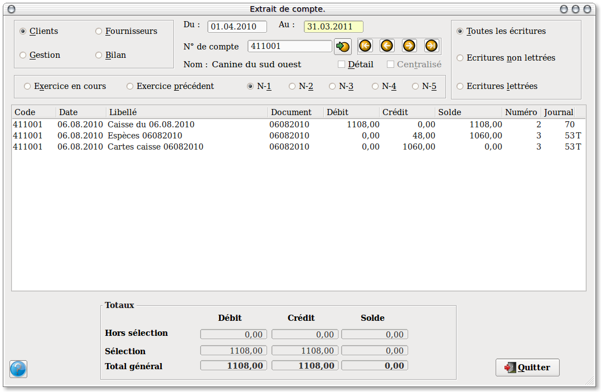

~ Comptabilité Laurux ~

~ Comptabilité Laurux ~ |
|
|
|

A gauche, un panel permet de sélectionner le type de comptes a visualiser. Il suffit de cliquer le bouton correspondant à votre choix. ( C'est sont les clients qui sont proposés par défaut)
Par défaut, les dates proposées sont celles du début et de fin de l'exercice en cours. Modifiez ces dates si besoin, sous la forme JJMMAAAA.
Par défaut, également, les comptes de début et de fin sont proposés selon le type d'extrait de compte selectionné.
Ex: de 410000 a 4199999 pour les comptes "Client", de 100000 a 9999999 pour les comptes "Bilan".
Enfin, vous pouvez choisir l'exercice a visualiser, (Pour rappel,Laurux conserve 5 exercices en archives) dans ce cas, comme pour l'exercice en cours, les dates de debut et de fin d'exercice s'affichent automatiquement, et bien entendu ces dates sont modifiables selon vos besoins.
Dans le cas ou deux exercices sont ouvert simultanément ( Fin d'exercice ) vous pouvez cocher le bouton " Exercice en cours" pour visualiser les écritures de l'exercice en cours ou cocher le bouton " Exercice précédent " pour celles de l'exercice en cours de bilan.
Pour afficher l'extrait de compte, sélectionnez le compte
en
cliquant sur l'icône  à
droite de la zone "Numéro de compte".
à
droite de la zone "Numéro de compte".
Dans la partie jaune apparaisent l'ensemble des ecritures comprises entre les dates selectionnees.
Sous cette zone, vous avez les totaux du compte concernant en premier les écritures en dehors des dates sélectionnees, puis les totaux pour la période sélectionnées et enfin, le total général.
Vous pouvez bien sur vous déplacer parmi les comptes a l'aide des fleches appropriées (Voir le paragraphe concerné dans les généralités).
Si le bouton " Centralisé " , dans la fiche du compte à consulter, est coché, alors n'apparaitront que les écritures de centralisation, c'est à dire une écriture par mois et par journal. Dans ce cas, pour avoir le détail, cocher simplement le bouton " Détail " . A droite, le bouton " Centralisé " n'est pas sensitif, il n'est que l'indicateur de l'état du compte consulté.
----------------------------------------------------------------------------------------------------------------------